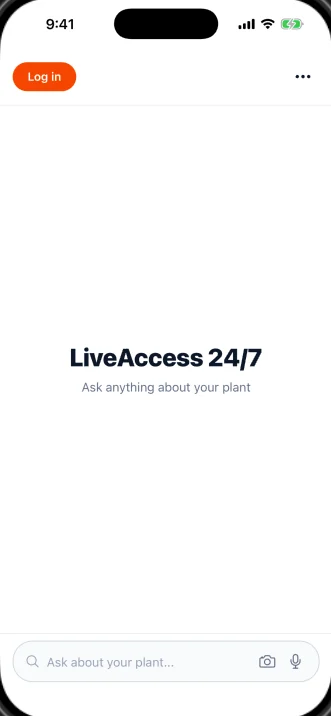
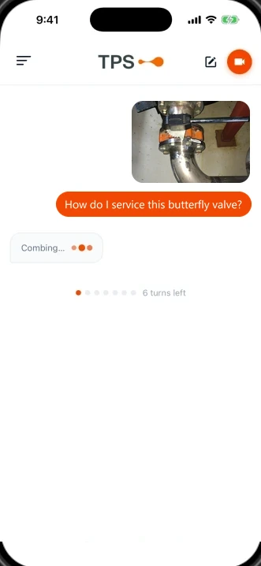
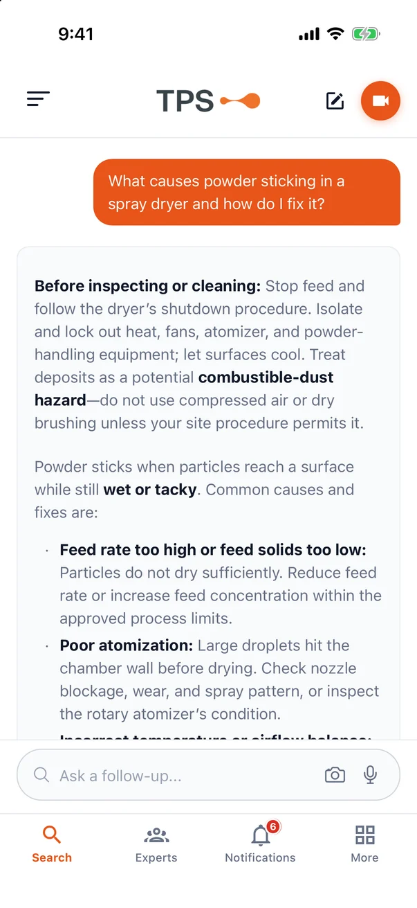
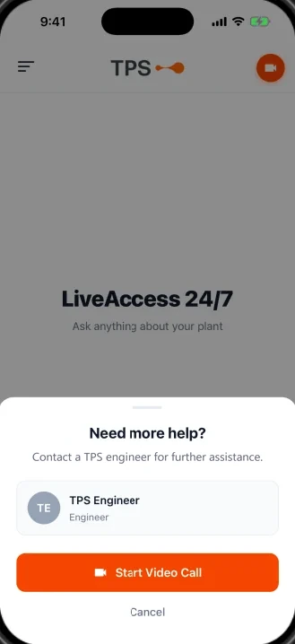

How it works
Get practical guidance in three simple steps.
LiveAccess gives you technical advice you can act on at the machine. Here is what using it looks like, screen by screen.




Illustrative examples. Each screen shows a different question.
Why not just search the drive?
More of the answer, less of the hunt.
| Task | Shared drive & binders | LiveAccess |
|---|---|---|
| Finding the page | Guess the folder, open PDFs one by one | Ask a question and find relevant information |
| At the machine | Walk back to the office or a laptop | On your phone, with voice and camera |
| Understanding the information | Unsure which version is current | Ask follow-up questions to clarify the guidance |
| When the document isn't enough | Email the supplier and wait | Video-call a TPS engineer |
| Night shifts & weekends | Wait for office hours | App available 24/7; engineers by availability |
Try it on your next technical question.
Free to download. No account needed to start searching.